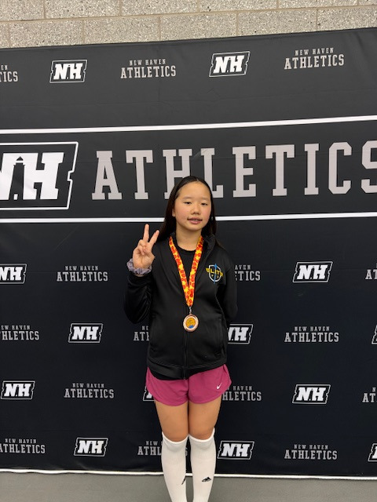
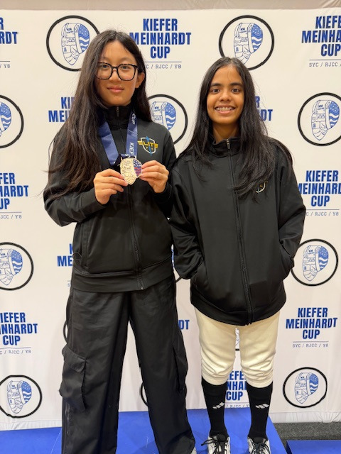

Penny Young and Mila Siu Take Bronze
Penny Young medals in New Haven; Mila Siu medals in Glen Allen, Va., and earns a C26.

Penny Young with her Youth 12 bronze at the Pizza RYC/RJCC in New Haven.
Photo: Elite Fencers Club
Elite FC brought home two youth bronzes this weekend, one in New Haven and one in Glen Allen, Va. Penny Young won bronze in Youth 12 Women at the Pizza RYC/RJCC in New Haven, Conn., on Sunday, Nov. 15, finishing third in a field of 52. A day earlier she placed 13th of 67 in Youth 14 Women.
At the Kiefer Meinhardt Cup, a Super Youth Circuit event, Mila Siu took bronze in Youth 14 Women on Saturday, Nov. 14, finishing third in a field of 62 and earning a C26. On Sunday she placed 10th of 54 in Youth 12 Women.
Clubmate Amina Gore made the top 16 twice at the New Haven regional: 16th of 54 in Junior Women on Saturday and 13th of 54 in Cadet Women on Sunday. Closer to home, Nico Ng finished fifth of 30 in Division IA Mixed at Freehold Fencing’s November Open on Sunday.

Mila Siu, left, with her Youth 14 bronze at the Kiefer Meinhardt Cup in Glen Allen, Va., and Stella Kuo.
Photo: Elite Fencers Club
| Fencer | Rating | Where |
|---|---|---|
| Mila Siu | C26 | Kiefer Meinhardt Cup, Glen Allen, Va. |
Three Head to Columbus
Three Elite FC fencers are entered at the November NAC, a USA Fencing national event, at the Greater Columbus Convention Center in Columbus, Ohio, Nov. 20–23. Anayaa Sheth opens the club’s run in Junior Women on Friday. Nico Ng fences Cadet Men on Saturday. On Sunday, Athreya Aravind and Nico Ng are both in Junior Men, and Athreya stays for Division I Men on Monday.
Three Calls, Two Minutes
At a big tournament, being late to the strip costs touches. Before a pool or the direct‑elimination round, the referee’s first call comes ten minutes before the start; a fencer who isn’t there is eliminated (t.118). Once fencing is under way, a fencer not ready when called gets a Yellow Card. One minute later comes a second call and a Red Card, which adds a touch to the opponent’s score. A third call a minute after that means elimination (t.119). Bring a spare weapon, body cord and mask cord to the strip, too (t.117).
A National Youth Event Next Door
Sixteen Elite FC fencers are entered at the Cobra Challenge, Nov. 27–29 at the Meadowlands Expo Center in Secaucus. It is a Super Youth Circuit (SYC) and Regional Cadet Circuit (RCC) event: Y10, Y12, Y14 and Cadet. Parking is free in the garages next to the venue. Every event has a cap, and the times posted can shift with attendance. Absolute Fencing Gear supplies the strips and scoring machines and will be on site to sell and repair equipment, handy if a blade breaks. Check the time listed for each event: at USA Fencing tournaments it is usually when check‑in closes, not when fencing starts.
Winter Camp: Sign Up Now
Elite FC Winter Camp runs Dec. 27–31, 9:30 a.m. to 2 p.m., and it’s open to all levels: footwork, technical and tactical drills, and games. Dec. 27 starts with a swag giveaway. K2 Fitness runs strength and conditioning on Dec. 28 and 30. On Dec. 29, a professional instructor leads yoga and breath control for competition, and lunch is served. Crepes on Dec. 31 celebrate the end of camp and 2026. Call it a tune‑up for the second half of the season, or a good excuse to escape visiting relatives for a few hours. If you’re going, let the club know as soon as possible for a headcount; contact the club for price and sign‑up.